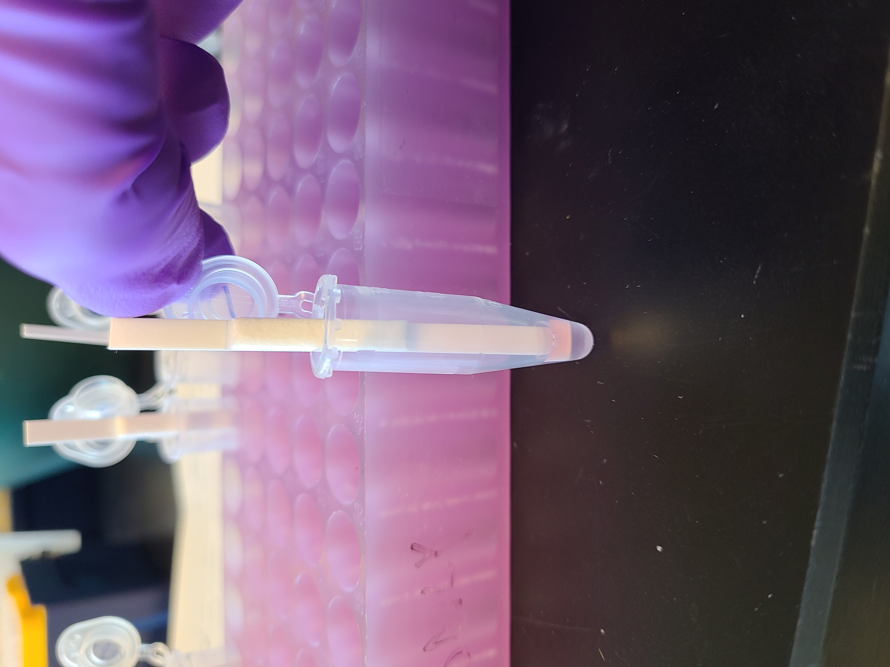
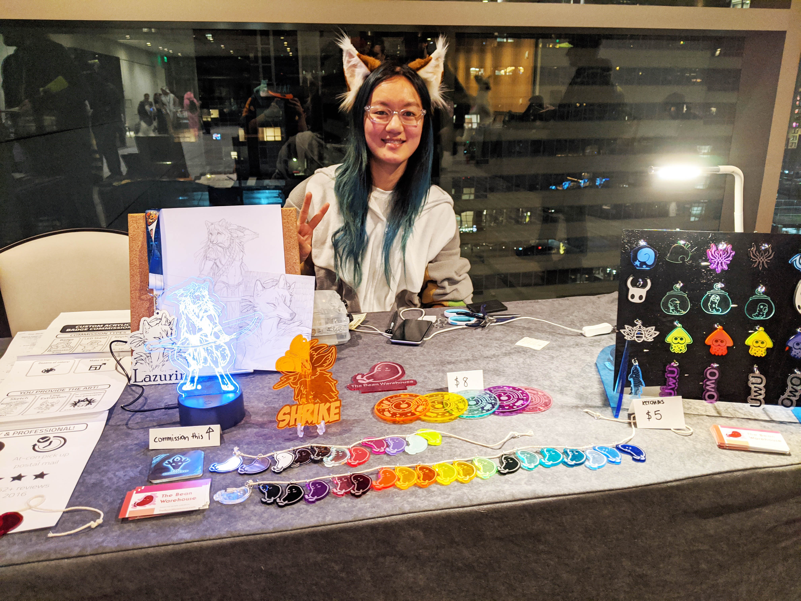
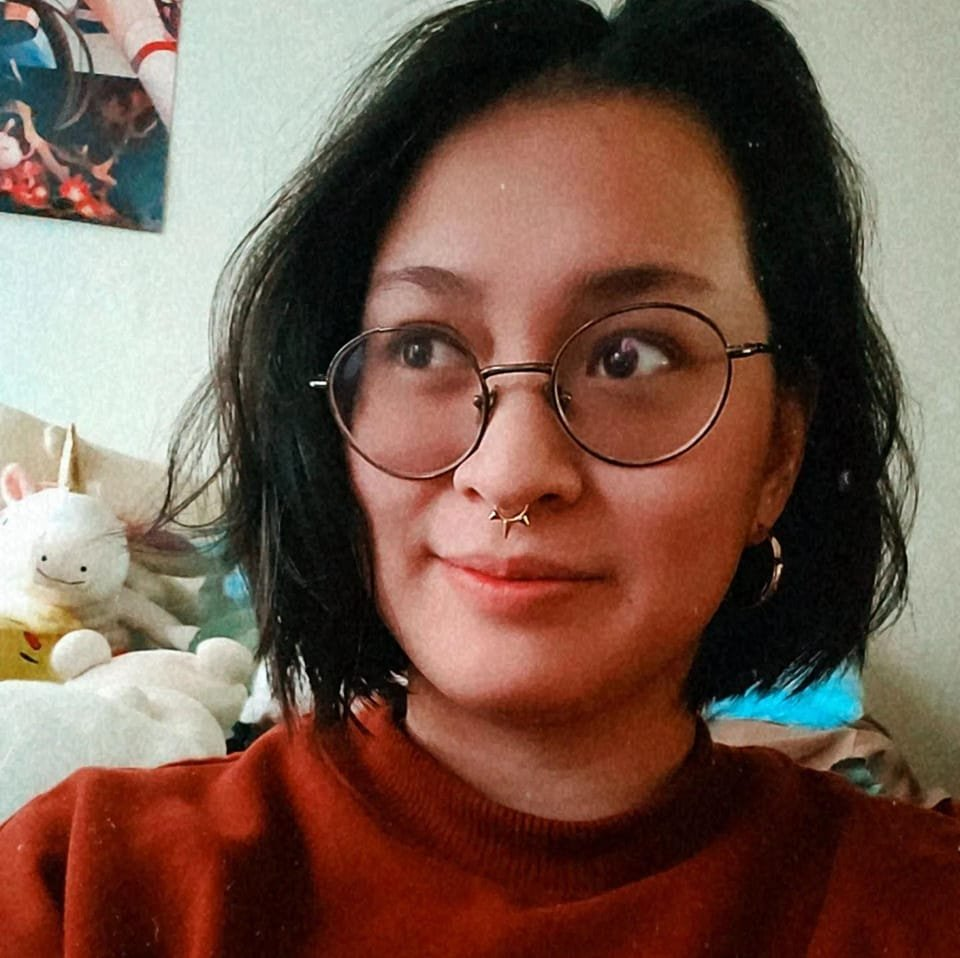
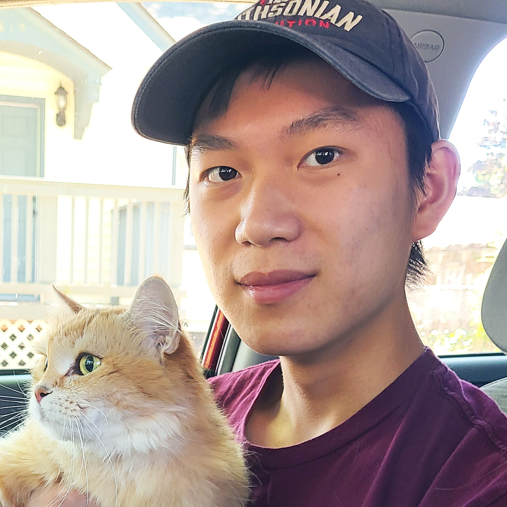
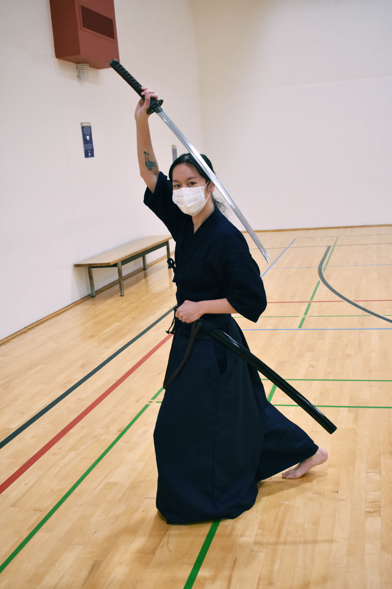
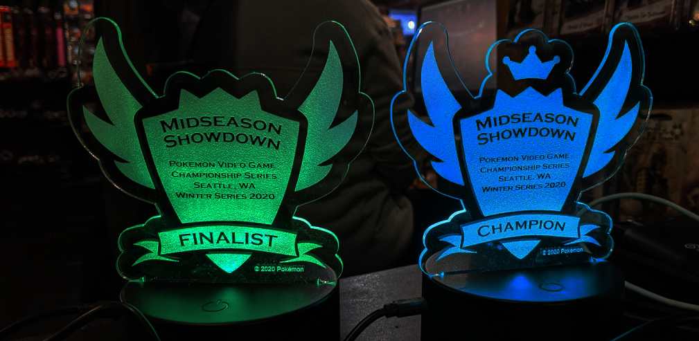
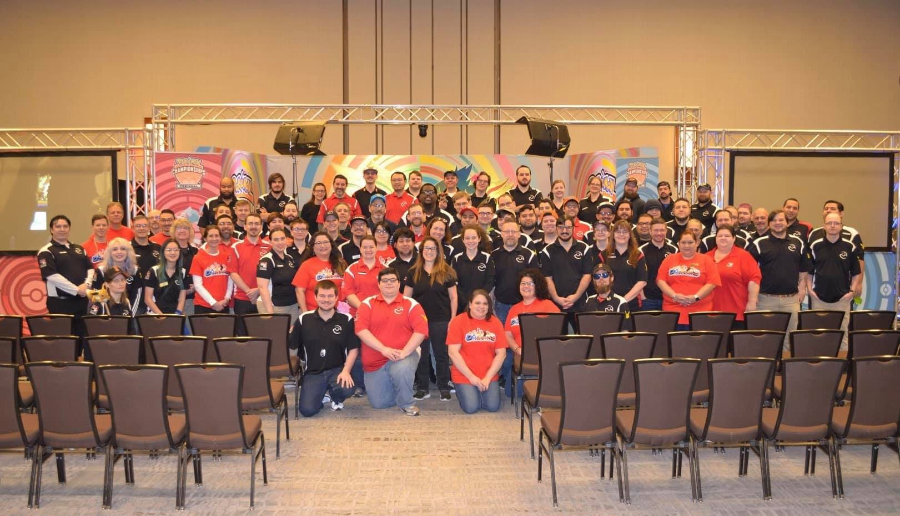
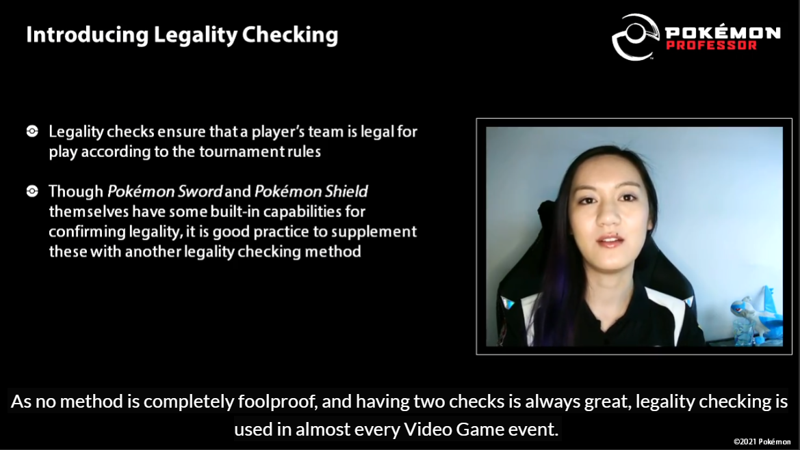

My Story: COVID-19 Research

(To be replaced with a photo of me doing lab work!? with joey?)
At the Pun Lab, we're interested in applying aptamers (short single-stranded DNA that can bind proteins) to cancer therapeutics, kidney disease, and also COVID-19 diagnostics. My role in the lab is leading the investigation on SARS-CoV-2-binding aptamers for rapid tests, such as lateral flow test strips and electrochemical detection. Despite having little background in aptamers when I first started, I not only quickly mastered our lab's aptamer protocols but also collaborated with other UW research groups. We obtained valuable patient samples from the Seattle Flu Study groups and I learned new techniques from other UW Bioengineering lab gorups, including lateral flow test strip manufacturing. Last summer, I co-authored our first publication on SARS-CoV-2 aptamers and presented my work at the 2021 Oligonucleotide Therapeutics Conference, which selected only five young scientist presenters in a competitive application process. More recently, I submitted my manuscript on an antibody-free SARS-CoV-2 lateral flow test strip for publication. I'm still a few steps away from the rapid test I envisioned at SPS, and continue to research how to apply our findings to COVID-19 variants. Thanks to the unique resources available at UW, I've been able to collaborate with talented scientists, bolstering the research I can share with the scientific community.
During this project, I also mentored UW bioengineering junior Joey to support my project and further his own research career. After I taught him key protocols, Joey was quickly able to conduct independent research and perform crucial experiments for SARS-CoV-2 aptamers. Joey and I still have more work ahead of us, but his efforts are already being recognized. Joey received the Mary Gates Research Scholarship this past quarter, and I'm proud to continue to cultivate his scientific abilities for months to come.

Joey
My Story: Laser-cutting
Just as I mentored Joey at the bench, I also trained two UW design majors as my online store apprentices. Camille is a junior in visual design and Robin is a senior in industrial design, and he's also my little brother. Since starting at UW, I've maintained my small business for selling laser-cut items, such as keychains, coasters, game token sets, display cases, costume props, and more. As orders grew to the tune of hundreds per month, I hired and taught my assistants how to prepare products and ship orders while also managing everyone's schedules to meet client deadlines. I gained valuable experience in how to manage trainees, which came in handy when I started to mentor Joey in the lab. Most importantly, creative applications for laser-cutting are constantly on my mind, applicable to nearly all facets of my life experiences. For example, for my SPS co-workers I crafted "ear savers", which alleviate pain associated with long-term mask-wearing. For Pun lab members, I create handy items like acrylic storage boxes and lab key tags. I also share my appreciation for collaborators and mentors by gifting them biologically-accurate cell coasters!

My artist booth for selling items at the 2019 Anthro Northwest convention in Seattle
 
Camille (left) and Robin (right)
My laser-cutting venture also helps fund Robin's husky experience. Because we both grew up in Atlanta, Robin pays out-of-state tuition and I worry that his bill may put him in long-term debt. To allow Robin to choose his major without being influenced by monetary costs and parental pressure towards high-earning but incompatibile majors, I put my additional business income towards Robin's needs. Since our first quarter in fall 2018, I pay for Robin's living expenses, including housing, utilities, and food. I'm proud that the company I built has enabled me to fund Robin's UW degre.
My Story: Kendo Club

Practicing forms (kata) with an unsharpened metal sword (iaito)
My husky experience doesn’t end at the bioengineering department; I’m also deeply involved in two communities at UW, the Kendo Club and the competitive Pokémon scene. Kendo and iaido are Japanese sword martial arts with deep roots in Japanese culture. At the Kendo Club, I practice both sports twice a week and support the organization from within as a regular member. (I abstained from taking formal leadership positions in clubs because I feel strongly that undergraduates should lead and maintain their club culture and direction.) I attend practice consistently to show my support for the club, even when our living rooms became our dojo over Zoom. Despite learning iaido almost exclusively in online quarantine, I achieved my first iaido rank (3-kyu) last summer. I also contribute in small ways, such as custom engraving bottle openers to give out at Dawg Days, editing photos for the club website, and giving rides to practices and events. As someone who once led clubs as an undergrad, I felt that some of the best club supporters are people who help generously without being required by their leadership title. Today, the club has a small but dedicated group of upperclassmen, and we teach kendo and iaido to dozens of new beginner students. As in-person practices have resumed, I hope to continue to be a pillar of support for the Kendo Club at UW.
My Story: Pokémon
For the UW community, Seattle community, and beyond, I organize and staff official Pokémon events for the trading card game and video game. Local events at places like MOX Boarding House are hosted by members of the Pokémon Professor program, which background checks and certifies volunteers to organize and judge events. I organize and host casual open play (called "Pokémon League") and competitive tournaments for both the trading card game and the video game. When I first moved to Seattle at the beginning of my PhD, I saw an opportunity to kindle the local Pokémon scene at the UW. Because there were only two stores in Seattle with Pokémon League, I started a weekly League in the U District's The Dreaming Comics and Games (now closed), and also hosted at MOX Boarding House in Ballard. Pokémon Leagues are open to the public, so when I'm hosting one, I warmly welcome players of all ages, orientations, and abilities to play. Sometimes it is challenging to teach children who are learning to read with Pokémon cards, or manage the needs of guests on the spectrum. These experiences have bolstered my patience and ability to serve others even when situations leave my comfort zone. Today, I am still the only Seattle organizer to hold officially sanctioned video game tournaments, bringing in UW students, Portland residents, and even Canadians together for Pokémon battles.

Laser-cut trophies I made for my Pokémon tournament 
Pokémon video game tournament at MOX Boarding House
Staff photo for the 2019 Santa Clara Regionals

Staff photo for the 2020 Dallas Regionals

Staff "photo" for the 2021 Player's Cup IV 
"Professor University" training video presented by me
Thanks to my ample local experience, I'm an invited staff member for regional large tournaments in Portland, Anaheim, Dallas, and other major cities. These tournaments attract hundreds of Pokémon players across the country vying for cash prizes, as well as a seasoned and diverse cast of Pokémon Professors as staff members. I not only learned useful teamwork and communication skills working under others, but also led teams of judges as my reputation grew. Every event is an opportunity to foster the inclusive community and learn something new: I learned about a disabled player who needs a nurse to handle his cards, and I learned how to handle judge calls with non-English speakers while staffing the World Championships. I'm still growing as a judge, but with each event I hope to become a better Pokémon volunteer.
Although in-person event were and remain canceled due to COVID-19, I persisted in contributing to the community through virtual means. Due to my previous experience hosting Seattle events and volunteering at large tournaments, I was chosen to become a judge (and later, Head Judge) for the only official online Pokémon circuit, the Player's Cup series. It was daunting to give orders to esteemed judges double or triple my age while also using four different programs to manage the event, but I performed so well that I was invited back to Head Judge the fourth and final Player's Cup. Additionally, I created tutorial presentation videos for Professor University, the official platform for training new volunteer judges and organizers. I covered a wide variety of topics ranging from how to start a League to how to check player's card decks and virutal teams for tournament legality. I'm excited to see how my teaching videos can positively impact communities outside of my own.